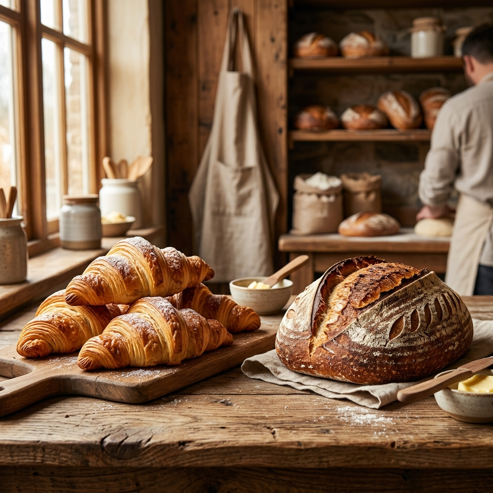

Bread that smells like home. 36-hour sourdough, authentic French butter, and the slow magic of time.
We don't use commercial yeast. We don't use additives. Our bakery is a living laboratory where we respect the natural fermentation process.
A 50-year-old sourdough culture that gives our bread its unique soul.
36 hours of fermentation to develop deep flavor and a perfect crust.

Learn the secrets of bread making in our weekend masterclasses. From nurturing your first starter to achieving the ultimate golden crust.